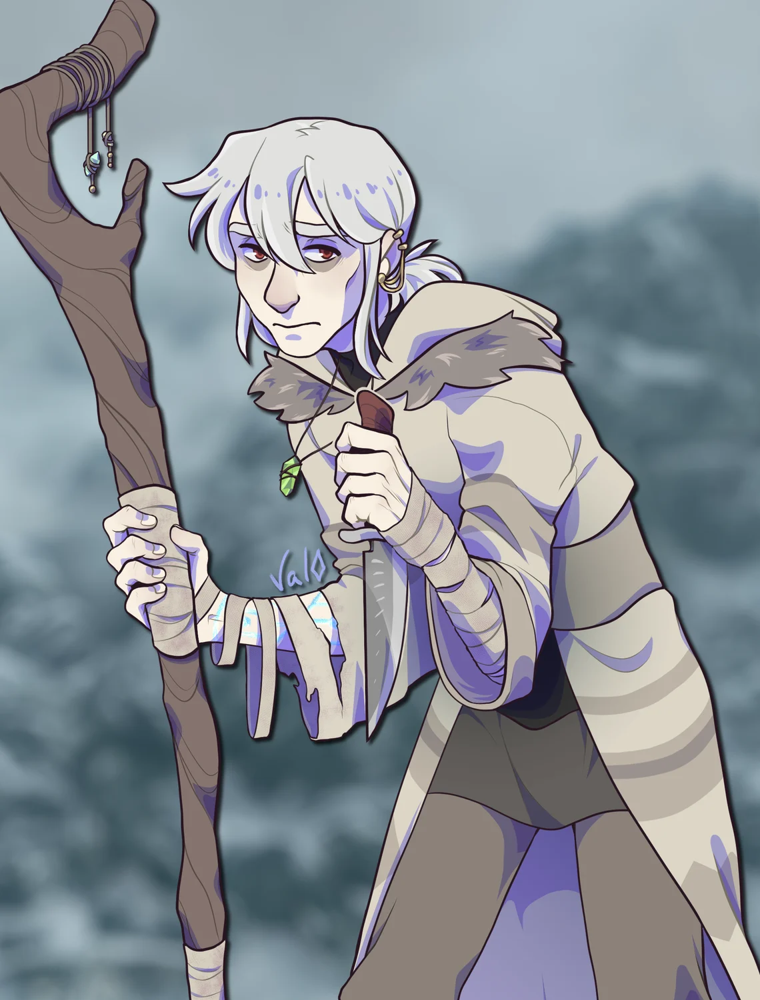
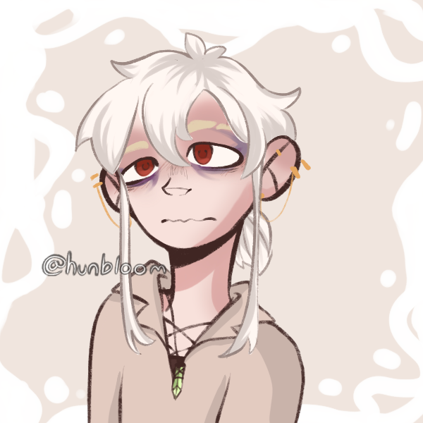

Les gros dossiers
Caim
Un héritier de l’arcane perdu dans les rues d’Hupis

Orphelin élevé dans les rues malfamées d’Hupis, Caim est le représentant inexpérimenté d’une ancienne espèce magique que le monde croyait disparue. Après huit années passées auprès de la druidesse qui l’avait sauvé et adopté, sa disparition soudaine le prive de nouveau de son foyer. Désormais livré à lui-même, Caim cherche autant à retrouver sa mentor qu’à récupérer la maison dans laquelle il avait enfin appris à vivre.
Les Xandars
Les Xandars sont une ancienne espèce magique que la plupart des peuples pensent aujourd’hui disparue. Profondément liés à l’arcane qui maintient le Monde suspendu de Dah Lor, ils possèdent une peau pâle parcourue, de la gorge jusqu’aux chevilles, de marques arcaniques complexes brillant dans l’obscurité.
Faibles sur le plan physique, les Xandars sont cependant des êtres presque entièrement constitués d’arcane. Les plus savants et les plus puissants d’entre eux seraient capables de réécrire la réalité comme les lignes d’un livre. Un novice sans contrôle comme Caim est toutefois davantage victime de cette puissance qu’il n’en est maître : les visions qui l’assaillent peuvent rapidement l’épuiser ou lui faire perdre connaissance.
Personnalité
Ce qu’il montre
Caim se présente comme un jeune homme discret, timide mais appliqué et désireux de se rendre utile. Il parle peu lorsqu'il ne connait pas les personnes qui l'entourent et préfère observer avant d'agir. Son manque d'assurance peut le faire paraître effacé, mais il devient étonnament opiniâtre dès qu'un sujet lui tient à coeur.
Curieux et studieux, il éprouve une véritable fascination pour la magie. Il peut passer des heures sur un même problème, répétant un sort ou relisant un passage jusqu'à être certain de l'avoir compris. Il a la facheuse tendance d'hyperfixer sur un sujet particulier, et rester bloqué dessus contre vents et marrées.
Ce qu’il cache
Derrière ses manières prudentes, Caim reste profondément marqué par la peur d'être abandonné. Il cherche constamment à prouver qu'il mérite la confiance et l'attention de celle qui l'a élevé. Cette soif de reconnaissance l’incite à travailler au-delà de ses limites et à dissimuler ses faiblesses, y compris lorsque ses visions ou son manque d’arcane le mettent en danger.
Traits
- Qualités : Curieux, loyal, persévérant, débrouillard et attentif aux autres.
- Défauts : Obstiné, méfiant, physiquement fragile, nerveux en société.
- Peurs : Les démonistes, la captivité, la découverte de ses marques.
- Quand il va mal : Caim s'isole, parle moins qu'à son habitude et se réfugie dans l'entraînement. Il vérifie compulsivement ses bandages et pousse sa magie jusqu'à l'épuisement.
Apparence
Frêle et d’une pâleur presque maladive, Caim est un jeune homme albinos à l’apparence rachitique. Ses cheveux blancs, mi-longs, sont généralement attachés en une queue-de-cheval négligée. Sa peau est recouverte, de la gorge jusqu’aux chevilles, de marques arcaniques complexes qui émettent une lueur dans l’obscurité.
Il dissimule ces marques sous des bandages enroulés autour de ses bras, de hautes bottes noires et une longue robe grise de druide. Il porte constamment les boucles d’oreilles que lui avait offertes sa mentor. Une gemme verte pend également à son cou : il ignore encore son utilité, mais l’a récupérée dans un tiroir du bureau de la druidesse avant que leur maison ne soit saisie.
Malgré sa faiblesse apparente, Caim peut faire preuve d’une agilité surprenante lorsque la peur ou le désespoir l’y contraignent. Il ne se sépare jamais du couteau attaché à sa ceinture, dissimulé sous sa robe, ni de son long bâton de druide, dont il se sert aussi comme d’une canne.
Fiche mécanique
Compétences
- Prémonition (passif) : Caim peut être assailli par de violentes visions prémonitoires, dont la précision et la portée varient considérablement. Ces visions consomment une immense quantité d’arcane et provoquent vertiges, nausées, pertes de repères ou évanouissements.
- Surcharge (passif) : Caim régénère progressivement sa mana en présence d’êtres vivants. Plus la vie environnante est abondante, plus cette récupération est rapide.
- Résonance (passif) : Par un contact physique et un effort de concentration, Caim peut accorder son arcane à celui d’une autre créature. Cette résonance lui permet d’amplifier temporairement certaines capacités magiques ou d’accélérer la guérison de blessures physiques mineures.
- Lame arcanique : Caim concentre son arcane autour d'un objet afin de créer une lame d’énergie.
- Rage arcanique : Lorsqu’il est acculé ou submergé par une émotion intense, Caim peut libérer brutalement l’arcane contenu dans son corps. Ses sorts gagnent en puissance, au prix d’une perte de contrôle croissante.
Autres aptitudes
- Son enfance dans les rues lui a appris à voler, dissimuler de petits objets, repérer les patrouilles et survivre avec peu de ressources.
- Malgré sa classe de druide, il est relativement à l’aise avec une dague et sait s’en servir pour se défendre à courte portée.
- Caim cherche désespérément à cacher ses marques arcaniques, de peur qu’un érudit, un collectionneur ou un démoniste ne reconnaisse leur origine.
Biographie
Aussi loin qu’il s’en souvienne, Caim a toujours vécu seul dans les rues malfamées de la cité nordique d’Hupis. Sans parent ni famille dont il puisse se rappeler, il grandit au jour le jour, survivant grâce aux vols à l’étalage, à sa capacité à esquiver les gardes et, parfois, à la bonté de passants apitoyés. Il apprit très jeune à dissimuler les marques arcaniques qui luisaient sur sa peau, sans réellement comprendre leur origine.
À quatorze ans, ses précautions ne suffirent plus. Une secte de démonistes reconnut la singularité de ses marques et l’enleva dans l’intention de le sacrifier afin de raviver d'anciens dieux. Caim fut sauvé par une vieille druidesse elfe, assez expérimentée pour comprendre que les symboles recouvrant son corps n’étaient pas une simple anomalie magique. Elle décida de l’accueillir sous son toit et de l’élever comme son fils.
Sous sa tutelle, Caim étudia les voies druidiques pendant huit ans. Pour la première fois, son quotidien devint stable et chaleureux. Dès que sa mentor lui apprit à lire, il se mit à dévorer les ouvrages de sa bibliothèque. Il pouvait répéter le même sort du matin au soir, jusqu’à ce qu’elle l’oblige à s’arrêter pour manger ou dormir. Il découvrit également des joies plus modestes : aller seul au marché, choisir ce dont ils avaient besoin et payer avec de l’argent qui n’avait été ni volé ni quémandé.
Toute bonne chose a pourtant une fin. Durant un hiver particulièrement rude, la druidesse partit comme à son habitude pour une mission dont elle refusa de révéler la nature. Cette fois, elle ne revint pas. Après plusieurs semaines sans nouvelles, elle fut présumée morte et sa demeure fut saisie par l’Empire. Caim se retrouva alors une nouvelle fois dans les rues gelées d’Hupis, privé de son foyer et de la seule famille qu’il ait jamais connue.
Il refuse cependant de considérer sa mentor comme morte. Convaincu qu’elle peut encore revenir, Caim s’est fixé un objectif immédiat : réunir suffisamment d’argent pour racheter sa maison et préserver tout ce qu’elle y a laissé. Il ignore encore si cette quête le conduira jusqu’à elle ou seulement jusqu’aux secrets qu’elle lui avait cachés.
Relations
La Druidesse
Lien : Mentor, mère adoptive
La druidesse qui sauva Caim des démonistes fut la première personne à lui offrir un foyer sans rien exiger en retour. Elle lui apprit à lire, à maîtriser son arcane et à considérer ses marques autrement que comme une malédiction à cacher.
Caim lui voue une admiration immense, mêlée à un besoin presque maladif de mériter ce qu’elle a fait pour lui. Il conserve une foi absolue en son retour et interprète l’absence de preuve de sa mort comme la certitude qu’elle est toujours en vie. Racheter sa maison est autant une promesse qu’un moyen de retarder le moment où il devra peut-être accepter sa disparition.
Galerie


Anecdotes
- Caim ne sait pas lire depuis très longtemps, mais il est devenu un lecteur particulièrement vorace. Il annote abondamment les ouvrages qu'il étudie, parfois jusque dans les marges des marges.
- Quand il est nerveux, il vérifie d'abord ses bandages, puis ses boucles d'oreilles. C'est l'un des rares gestes qui parviennent réellement à le rassurer.
- Caim a le sommeil léger, et préfère garder un couteau à portée de main, même dans un lieu sûr. Les seuls moments où il semble réellement vulnérable est quand il s'évanouit après une vision.
- Bien qu’il ait grandi dans une région hivernale, Caim déteste le froid. Il n'est pas rare de le voir s'emmitoufler dans des fourrures sous sa robe de druide.
- Son nom provient du démon Caim de l'Ars Goetia, parfois représenté comme un oiseau noir et associé à la compréhension des présages.
Note de l’auteur
Toute l'histoire de Caim découle de son espèce et de son but. Je savais lors de sa création qu'il faudrait, pour la campagne, que mon personnage coure après l’argent. Ainsi son histoire s'est naturellement construite autour de la notion du foyer. La quête de Caim n'est pas de devenir le plus puissant ni même de découvrir ses origines, c'est quelque chose de personnel et modeste. Il souhaite racheter la maison de son mentor, plutôt que de considérer les enjeux représentant le retour d'un Xandar. C’est ce contraste qui me plaît.
C'est la même chose du côté de ses aptitudes : Caim est d'une espèce composée d'arcane pure. C'est un être d'immense potentiel magique, mais pour qui cette puissance est une contrainte, voire un handicap. Sa magie résout des situations, sauve des vies, mais épuise, trahit et attire des attentions indésirables.